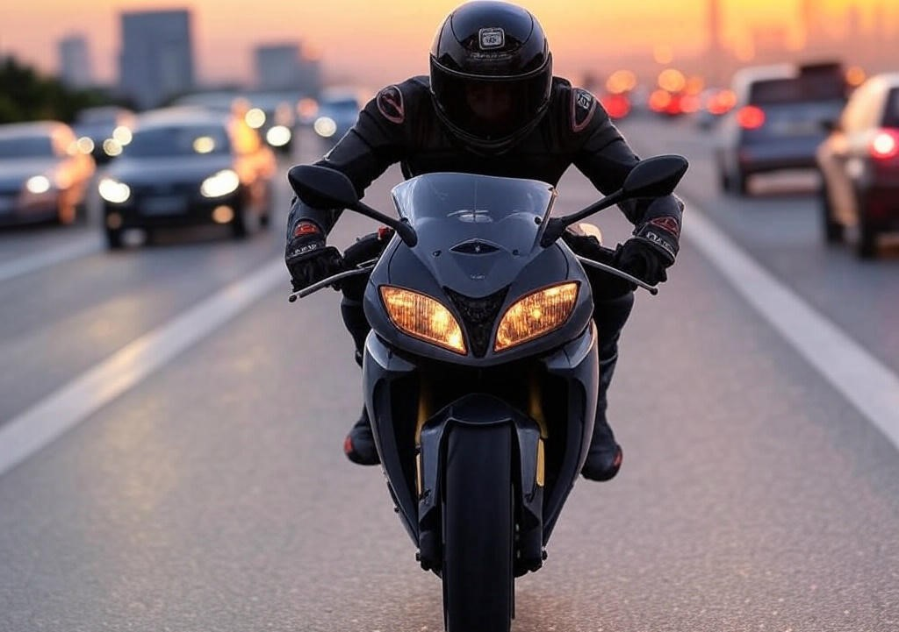

If you love high-speed motorcycle racing games, then Traffic Rider is the perfect game for you. Now, imagine playing it with unlimited money—sounds exciting, right? With unlimited cash, you can unlock the fastest bikes, upgrade them to their full potential, and enjoy an unbeatable gaming experience. In this article, we'll explore why downloading Traffic Rider Unlimited Money is a game-changer and how it enhances your racing adventures.
Traffic Rider is not just another racing game—it's a thrilling first-person motorcycle simulator that puts you in the driver's seat. The realistic graphics, smooth controls, and immersive sound effects make you feel like you're actually speeding down a highway. The game offers different modes, including career missions, free ride, and time trials, ensuring endless entertainment.
However, progressing in the game can be slow if you don't have enough in-game money. Bikes and upgrades are expensive, and earning cash takes time. That's where Traffic Rider Unlimited Money comes in—it removes all financial barriers, letting you focus on what really matters: racing like a pro!
Money is essential in Traffic Rider because it allows you to buy new bikes, upgrade speed, acceleration, and braking, and customize your ride. Normally, you'd have to complete races repeatedly to earn enough cash, which can be tedious. But with the unlimited money version, you can skip the grind and jump straight into the action.
Want the fastest superbike in the game? No problem! Need to max out your engine performance? Easy! With unlimited funds, you can experiment with different bikes and upgrades without worrying about costs. This means more time racing and less time worrying about in-game finances.
Getting Traffic Rider Unlimited Money is simple. You can find the modded version on trusted gaming websites that offer APK files for Android devices. Before downloading, make sure to enable installations from unknown sources in your device settings. Once installed, open the game, and voila—you'll have unlimited money ready to use!
Always ensure you download from a reliable source to avoid malware or fake files. The latest version usually includes bug fixes and improved gameplay, so keep an eye out for updates.
With unlimited money, you can unlock the most powerful bikes right from the start. Imagine zooming past traffic at 300+ km/h without any restrictions. The adrenaline rush is unbeatable! You can also test different handling styles, from sportbikes to cruisers, and see which one suits your racing skills best.
Upgrades play a huge role in performance. Better acceleration helps you overtake rivals quickly, while improved braking ensures you don't crash into traffic. With unlimited money, you can fine-tune your bike to perfection and dominate every race.
One of the best things about Traffic Rider Unlimited Money is that you don't have to wait to unlock content. In the standard version, you might spend hours grinding just to afford a single upgrade. But with unlimited cash, you can immediately access all bikes and modifications, making the game much more enjoyable.
This is especially great for casual gamers who want to experience the full game without spending too much time on repetitive tasks. Now, you can focus on mastering tracks, beating high scores, and enjoying the game the way it was meant to be played—fast and furious!
Whether you're a beginner or a seasoned Traffic Rider player, the unlimited money mod enhances the experience for everyone. New players can get familiar with different bikes and upgrades without struggling with limited funds, while veterans can experiment with high-end builds and challenge themselves in new ways.
The game becomes more about skill and strategy rather than resource management. You can try risky overtakes, push your bike to its limits, and even attempt insane speed runs without worrying about repair costs.
Traffic Rider is already an amazing game, but with unlimited money, it becomes even better. No more waiting, no more grinding—just pure, high-speed fun. If you love racing games and want the ultimate Traffic Rider experience, downloading the unlimited money version is a no-brainer.
So, what are you waiting for? Grab the mod, hop on your dream bike, and hit the highway like never before. The road is yours—race without limits!